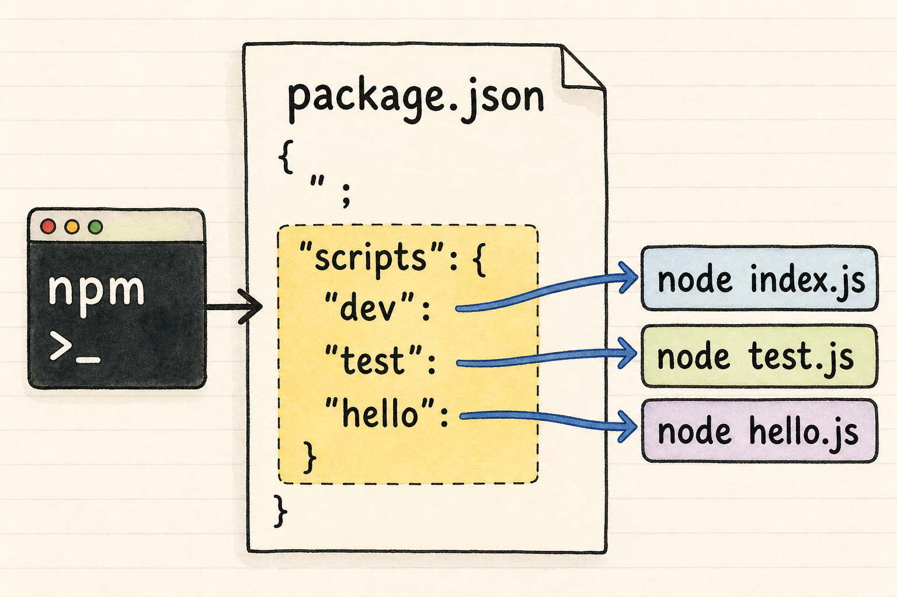

第 3 课：npm scripts 是项目命令菜单
这一课把 scripts 单独讲透。你会学会：为什么项目常写 npm run dev、npm test，以及这些命令怎样找到真正要执行的程序。

scripts 像项目命令菜单：左边是你输入的统一入口，右边是真正被执行的命令。一、真实场景
你加入一个 Node.js 项目后，README 通常不会让你直接输入很长的底层命令，而是写：
npm install
npm run dev
npm test这不是为了神秘化，而是为了统一入口。项目作者把常用动作写进 package.json 的 scripts，其他人按菜单执行。
本课胜利条件：你能读懂 scripts，能新增一个脚本，并能解释 npm run hello 为什么会执行右侧命令。
二、scripts 的最小模型
先看一份最小 package.json：
{
"name": "scripts-lab",
"version": "1.0.0",
"private": true,
"scripts": {
"dev": "node index.js",
"test": "node test.js",
"hello": "node hello.js"
}
}scripts 是一个对象。左边的 dev、test、hello 是脚本名；右边的 node index.js 等字符串是真正执行的命令。
| 你输入 | npm 查找 | 真正执行 |
|---|---|---|
npm run dev | scripts.dev | node index.js |
npm run hello | scripts.hello | node hello.js |
npm test | scripts.test | node test.js |
三、两个快捷命令
多数脚本要写成 npm run 脚本名。但 start 和 test 很常用，所以 npm 给了快捷入口。
test
npm test 会运行 scripts.test。你也可以写 npm run test。
start
npm start 会运行 scripts.start。后面做后端服务时会经常见到。
入门阶段可以先统一使用 npm run xxx，看到 npm test 和 npm start 时知道它们是快捷写法就行。
四、复制粘贴练习
这次继续零基础友好路线：不要求你自己写复杂 JavaScript，只通过复制粘贴观察不同脚本执行不同文件。
1. 创建目录
mkdir npm-scripts-lab
cd npm-scripts-lab2. 创建 package.json
新建 package.json，复制：
{
"name": "npm-scripts-lab",
"version": "1.0.0",
"private": true,
"scripts": {
"dev": "node index.js",
"hello": "node hello.js",
"test": "node test.js"
}
}3. 创建三个 JavaScript 文件
新建 index.js，复制：
console.log("dev script: running index.js");新建 hello.js，复制：
console.log("hello script: running hello.js");新建 test.js，复制：
console.log("test script: running test.js");4. 运行脚本
npm run dev
npm run hello
npm test你应该依次看到：
dev script: running index.js
hello script: running hello.js
test script: running test.js观察重点：你输入的是 npm 命令，但输出来自不同 .js 文件。npm 负责查菜单，Node.js 负责运行文件。
五、再往项目里看一步
npm 官方文档里有两个对后面很重要的规则，现在先建立直觉即可。
脚本从项目根目录运行
脚本里的相对路径通常从 package.json 所在目录算起。以后项目出现 src/server.js 时，这条会帮你判断路径。
本地命令可以直接写
脚本运行时，本地依赖提供的命令会进入 PATH。所以后面安装 typescript 后，脚本里可以写 tsc。
六、即时练习
题 1：npm run hello 会读取哪个位置？
题 2：npm test 通常读取哪个脚本？
回忆练习：用 2-4 句话解释：为什么你输入 npm run dev，最后却是 index.js 在输出文字？
七、课后小任务
在刚才的练习项目里，给 scripts 新增一个脚本：
"bye": "node bye.js"然后新建 bye.js：
console.log("bye script: running bye.js");最后运行：
npm run bye如果能看到 bye script: running bye.js，说明你已经会给项目添加自己的 npm script 了。注意 JSON 里新增字段时，前一行通常要补英文逗号；最后一行不要加逗号。
如果卡住，把 package.json 发给我，我会帮你一起看 JSON 逗号、脚本名和文件名哪里没对上。
主要来源
本课参考 npm Scripts 官方文档 对 scripts 字段、pre/post 脚本、脚本运行目录和退出行为的说明，以及 npm run-script 官方文档 对 npm run、传参和 node_modules/.bin PATH 行为的说明。